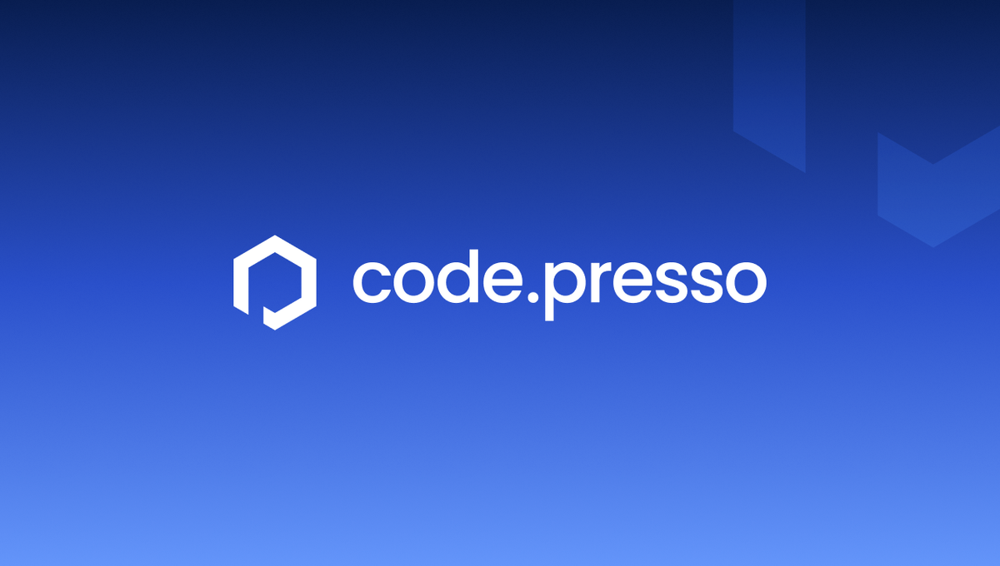
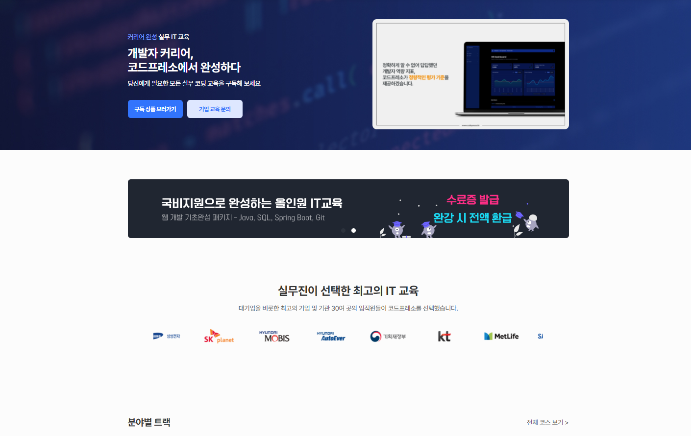
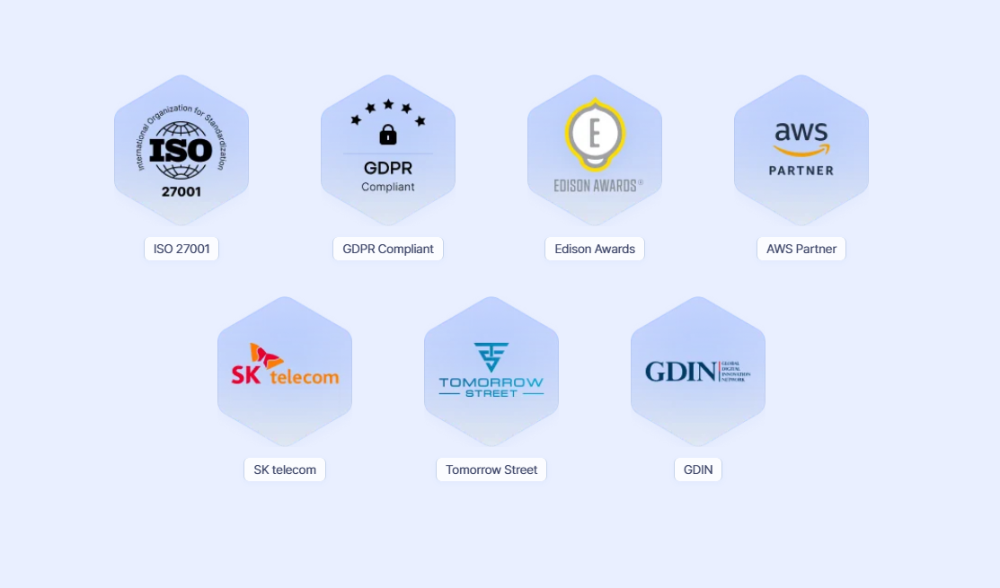
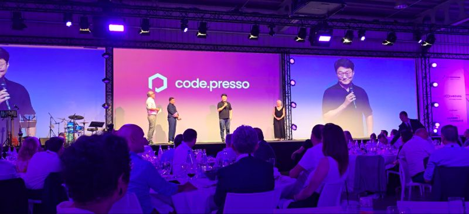
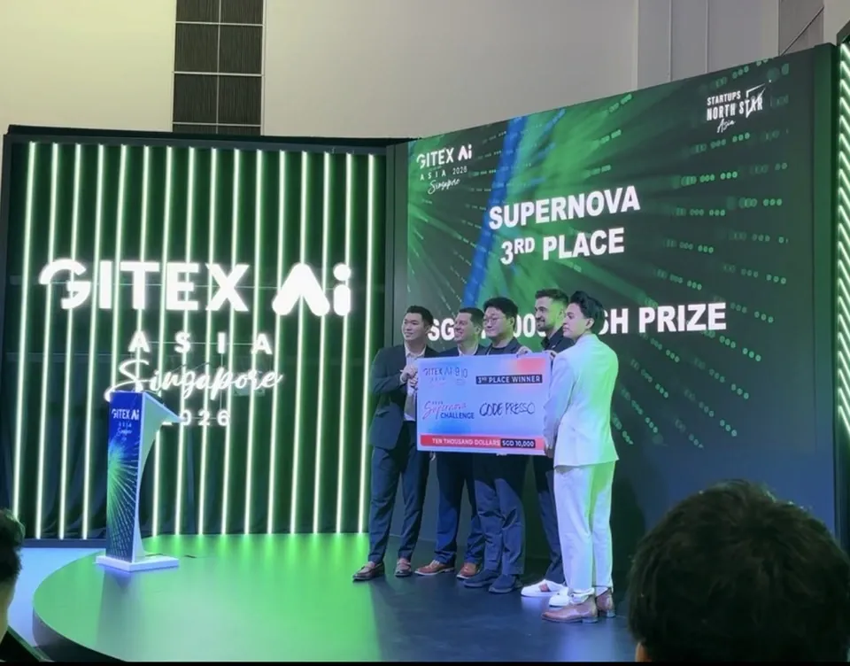
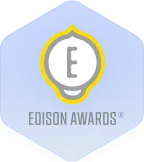
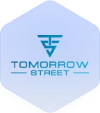

교육 플랫폼의 시작
서울 강남구 테헤란로에서 시작하여
온라인 IT 교육 플랫폼으로 첫 학습자를 만났습니다.

비전은 AI 리터러시의 표준화.
“AI계의 토익”을 만듭니다.
아무리 좋고 비싼 도구를 줘도, 그걸 쓰는 사람의 인식과 활용 역량이 바뀌지 않으면 전환은 없습니다.
서울 강남구 테헤란로에서 시작하여
온라인 IT 교육 플랫폼으로 첫 학습자를 만났습니다.

자체 에듀테크 플랫폼을 열고, 실습 중심의 온라인 IT 교육을 본격적으로 시작했습니다.

ISO 27001 인증과 정보보호 경영시스템으로, 기업이 맡길 수 있는 기반을 갖췄습니다.

역량 인증 제품 SkillCertify를 내놓고, 유럽 법인과 국제 수상으로 무대를 넓혔습니다.

글로벌 무대에서 AI 역량 진단의 가능성을 확인하고, 표준을 만드는 일을 이어갑니다.

2019
2021
2023
2024
2026
전 세계의 기업들이 코드프레소를 신뢰하고 있습니다.

Edison Awards
Tomorrow Street서울에서 시작해, 유럽 두 법인으로 무대를 넓혔습니다.
서울 본사
경기 성남시 금토로 80번길 56
룩셈부르크 법인
유럽 시장 거점 · 2024
영국 법인
글로벌 확장 거점 · 2024
기업교육을 도입한 담당자들의 실제 후기입니다.
“코드프레소가 보유한 전문성, 교육운영 서비스를 통해벡터 코리아 | 아카데미 시니어 매니저
기술 교육을 효과적으로 전달할 수 있었습니다.”
“자동차 SW뿐만 아니라 인공지능, 빅데이터, 클라우드 등기술교육팀 | 책임매니저
다양한 스펙트럼을 커버하는 기술 교육을 보유하고 있어 여러 주제영역에서 협업하고 있습니다.”
“교육 현황과 상황에 맞추어 온라인 또는 오프라인으로품질본부 | 교육담당자
적절히 구성해 주셔서 수월하게 교육을 진행할 수 있었습니다.”
“과정 선정 단계부터 교육 종료까지 A to Z 서비스를 받고 있습니다.SW교육 | SME
신경 써야 하는 부분을 최대한 덜어주어 편하게 진행할 수 있었습니다.”